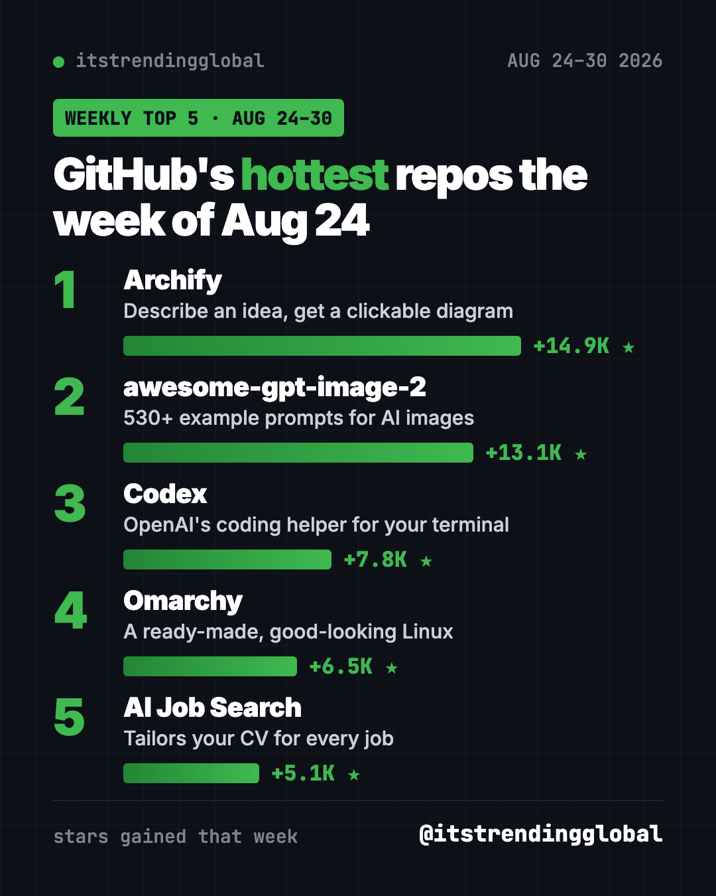
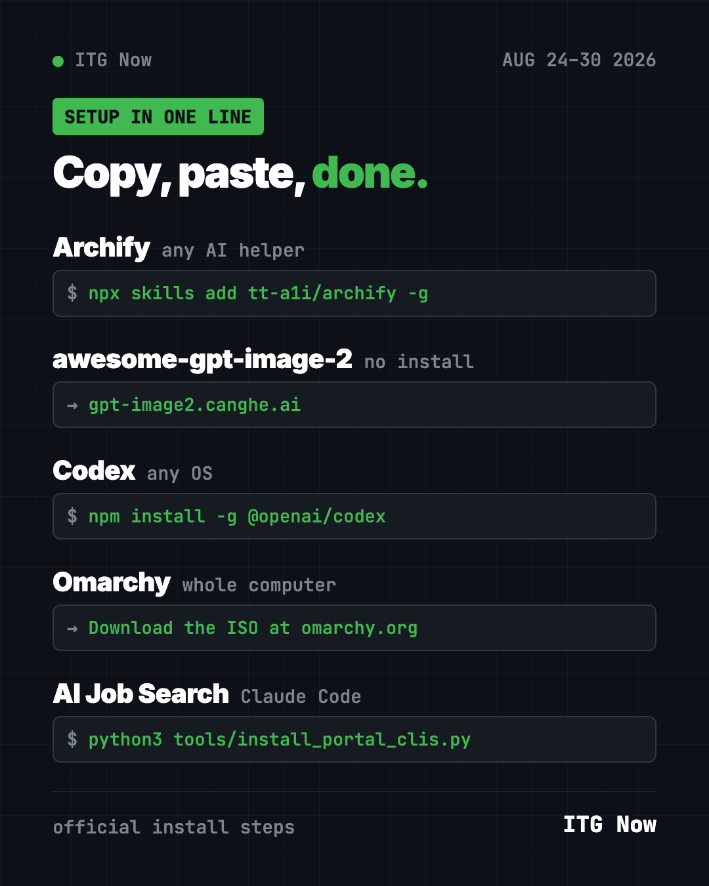

Home › Tools and repos › GitHub trending this week
GitHub Trending Repos Aug 24, 2026: Archify, Codex and More
- Published 15 Oct 2026
- Updated 16 Oct 2026
- 7 min read
- By the ITG Now team
In this guide (9)
GitHub trending repos Aug 24 2026 were led by Archify, which turns a plain sentence into a clickable diagram. It gained +14.9K stars. A library of 530+ AI image prompts came a close second, and OpenAI's own coding helper, Codex, took third.
It's a mixed bag this week. You get a drawing tool, a prompt cookbook, a coding agent, a whole Linux setup and a job-hunting helper. Here's the short version of each, plus how to start.
Key takeaways
- Archify topped Aug 24 to 30 with +14.9K stars. Describe an idea, get an interactive diagram.
- awesome-gpt-image-2 is a free gallery of prompts for OpenAI's image models. You can browse it on a website.
- Codex is OpenAI's free, open-source coding agent. You sign in with your ChatGPT plan.
- AI Job Search tailors your CV and cover letter to each job, inside Claude Code.

GitHub trending repos Aug 24 2026 compared
| Repo | What it does | Best for | Free? | Setup |
|---|---|---|---|---|
| Archify | Turns ideas into clickable diagrams | Anyone who explains plans | Yes (MIT) | One command |
| awesome-gpt-image-2 | 530+ example prompts for AI images | Designers, marketers | Yes (MIT), image model costs money | Website, or one command |
| Codex | AI coding agent for your terminal | People who build things | Yes (Apache-2.0), needs a ChatGPT plan or key | One command |
| Omarchy | A ready-made Linux operating system | Tinkerers with a spare PC | Yes (MIT) | Install from USB |
| AI Job Search | Tailors CVs and cover letters | Job hunters | Yes (MIT), needs paid Claude Code | Several steps |
Star gains cover Aug 24 to 30, 2026. Totals were checked on GitHub on October 16, 2026.
1. Archify: describe it, see it
Stars: +14.9K this week · about 84K total
What it is: A skill for AI helpers like Claude Code and Codex. You describe an idea, a plan or a codebase in words. Archify draws a polished diagram you can click and explore.
Who it's for: Teachers, team leads, founders, and anyone who's tired of drawing boxes by hand.
Everyday use: "Draw how a pizza order goes from the app to the delivery driver." Drop the result in your slides.
Install it: You need Node.js. Copy and paste this:
npx skills add tt-a1i/archify -g
Let Claude or Codex do it:
Install Archify from github.com/tt-a1i/archify, then draw a diagram of how my weekly grocery shopping works.
More ideas are in our Archify guide.
2. awesome-gpt-image-2: a cookbook of image prompts
Stars: +13.1K this week · about 34.5K total
What it is: A big library of prompts for OpenAI's GPT Image 2 models. The README counts 530+ examples and 20+ templates, each with the full prompt. A website lets you filter by style and copy prompts in one click.
Who it's for: Designers, marketers and small business owners who make images with AI.
Everyday use: Find a product-poster template, swap in your product, and paste it into your image tool.
Install it: No install needed. Browse the gallery at gpt-image2.canghe.ai. To add its prompt skills to your AI helper, copy and paste this:
npx skills add freestylefly/awesome-gpt-image-2 --global --all --copy
Let Claude or Codex do it:
Look through github.com/freestylefly/awesome-gpt-image-2 and pick the best template for a poster of my candle shop. Fill it in for me.
See awesome-gpt-image-2 on GitHub
3. Codex: OpenAI's coding helper
Stars: +7.8K this week · about 129.4K total
What it is: A coding agent from OpenAI that runs on your own computer. You ask for changes in plain words. It reads your files, writes code and runs commands. There's also a desktop app and an editor plug-in.
Who it's for: Anyone building a website, app or script with AI help.
Everyday use: "Make my portfolio page look good on phones."
Install it: Copy and paste this:
npm install -g @openai/codex
Then type codex and choose Sign in with ChatGPT. The README says it works with Plus, Pro, Business, Edu and Enterprise plans.
Let Claude or Codex do it:
Install Codex CLI from github.com/openai/codex for my computer and walk me through signing in with ChatGPT.

4. Omarchy: a good-looking Linux, ready to go
Stars: +6.5K this week · about 44.9K total
What it is: A full Linux operating system set up by DHH, the creator of Ruby on Rails. It comes with themes, keyboard shortcuts, dictation, AI tools and a manual. You install it on a whole computer, not as an app.
Who it's for: Tinkerers with a spare PC who want a sleek, keyboard-driven setup.
Everyday use: Turn an old laptop into a fast, clean machine for writing and coding.
Install it: Download the Omarchy ISO from omarchy.org. Put it on a USB stick with balenaEtcher, then start the PC from the stick. The manual says you must turn off Secure Boot first.
omarchy.org → Download ISO → balenaEtcher → boot from USB
Let Claude or Codex do it:
Read the Omarchy manual at github.com/omacom/omarchy and give me a checklist to install it safely on my spare laptop.
⚠️ Heads up: The full-disk install wipes the drive. Back up first. Use a wired keyboard, since the README says Bluetooth won't work for the startup password.
5. AI Job Search: a tailored CV for every job
Stars: +5.1K this week · about 47.3K total
What it is: A job-search kit built on Claude Code. It scores job posts, tailors your CV, writes cover letters and preps you for interviews. It all runs on your computer.
Who it's for: Job hunters who are tired of rewriting the same CV over and over.
Everyday use: Paste a job link and get a CV and cover letter shaped for that exact role.
Install it: You need Claude Code (paid plan or credits), Python 3.10+, Bun and LaTeX. After you get the project, copy and paste this:
python3 tools/install_portal_clis.py
Then start claude and type /setup. Our AI Job Search guide has every step.
Let Claude or Codex do it:
Set up AI Job Search from github.com/MadsLorentzen/ai-job-search as a PRIVATE copy, install what's missing, then run /setup with my CV.
Which one should you try first?
- You present ideas: start with Archify.
- You make images for work: browse awesome-gpt-image-2. No install.
- You want an AI that codes: install Codex, if you already pay for ChatGPT.
- You're job hunting: set up AI Job Search.
- You have a spare PC and a free weekend: try Omarchy.
💡 Tip: Your CV holds personal data. The AI Job Search README warns that a GitHub fork is always public, so keep your copy private.
For the full month, see the top 5 GitHub repos of August 2026 and August 2026 in AI. Or go to the week before or the week after.
FAQ
What were the GitHub trending repos Aug 24 2026?
Archify (+14.9K stars), awesome-gpt-image-2 (+13.1K), Codex (+7.8K), Omarchy (+6.5K) and AI Job Search (+5.1K).
Is OpenAI Codex free?
The tool is free and open source. To use it, you sign in with a paid ChatGPT plan or use an OpenAI API key.
Will Omarchy delete my files?
The full-disk install wipes the chosen drive. There's also a free-space install for dual booting, but always back up first.
Do I need to know how to code for Archify?
No. You install it once, then ask for diagrams in normal words.
Keep reading

AI Repos That Blew Up This Week: 10 New Picks (Oct 2026)
AI repos that blew up this week: 10 new GitHub projects under 10 days old, from launch videos made by AI to co-op mods for solo games, with the catch for each.

Trending GitHub Repos October 2026: The Top 5 So Far
The trending GitHub repos of October 2026 so far: a free Photoshop-style editor, an AI art studio, a big AI model for gaming PCs and more, explained.

Trending GitHub Repos This Week, Oct 5 2026: The Top 5
Trending GitHub repos this week Oct 5 2026: Matt Pocock's skills, the openGym workout tracker, e2e testing, HyperFrames video and claude-mem memory.